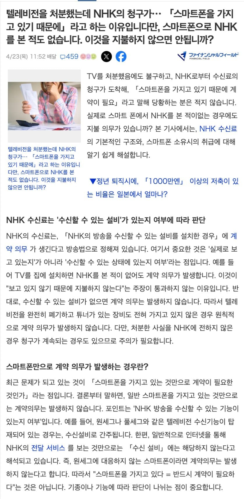
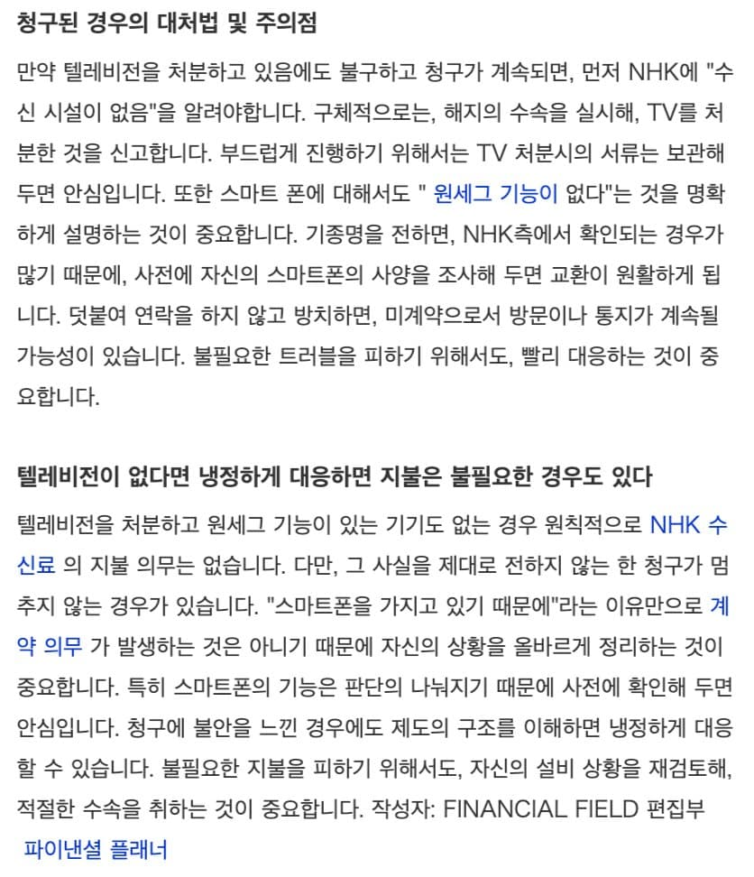

요약.
원세그( 걍 DMB라고 생각하셈)가 달려있는 스마트폰에 한해서 NHK수신료 청구.
자신이 소유하고 있는 스마트폰에 원세그 없음을 증명하면 안내도 됨


요약.
원세그( 걍 DMB라고 생각하셈)가 달려있는 스마트폰에 한해서 NHK수신료 청구.
자신이 소유하고 있는 스마트폰에 원세그 없음을 증명하면 안내도 됨
그냥 안냄. 강제징수 권한이 없기때문에 무시하면 됨
그래서 저게 일본에서 아이폰 점유율 높아지게된 요인중 하나였다고
일본은 아이폰 사면됨.
일본애들 진짜 저거때문에 아이폰삼.
도대체 이게 무슨 ㅂㅅ 같은 상황 ㅋㅋㅋㅋ
자국기업 ㅂㅅ 만드는 방법도 가지가지네ㅋㅋ
아이폰 잘팔리는 이유 ㅋㅋㅋㅋㅋ
아이뻐
한국도 스마트TV를 공중파 안봐도 수신료붙고 뭔
티비 수상기 아니면 안붙지않아?
티비만 있어도 붙이지 않나
티비 수상기에만 붙이는거라, 튜너 없는 스마트 티비는 안붙고 튜너 있으면 붙는게 원칙임
튜너가머야
참치
NHK로부터 대충 뭐시기 하는 당
우리는 그런거없냐ㅋㅋ
원세그 안달린 갤럭시 의문의 승리
의외로 19년도까진 일본판에 있긴했음
저새끼들은 진짜 집요하네
마치 kbs같아
어둠의 앱등이단 ㄷㄷㄷ
예전에 유학갔을 때 핸드폰 아이폰이라 못본다 했는데, 집에 컴퓨터 있어도 모니터 기종 보여줘서 그 기종이 일본에서 tv를 볼 수 있는 기종인지 본사에 연락해서 검사받고 다했었음.ㅋㅋ
저 새끼들 올때마다 니 애미한테 가서 욕박으면댐10년넘게 한번도 안냈음
폰이랑 티비없는거 검증 하라고 하면 싫다고 영장받아오라 하니깐 다 걍 돌아감
저거 때문인지 애플 아이폰 하고 구글 픽셀폰도 인기 좋더라
내 폰엔 원세그 없다하면 '그럼 진짜 원세그 없는지 내 눈으로 확인할테니 스마트폰 잠금 풀고 나한테 내놔라' 라고 할 ㅅㄲ들이어서 아예 처음부터 무시해야함
진짜 좆같은게 KBS 단 한번도 본적 없고 인터넷 티비도 없음.
스마트 티비라서 인터넷 연결해서 유튜브,넷플릭스만 보는데 시청료 내야됨 ㅋㅋㅋ
전화해서 취소하면 안내도 된다
티비 있으면 볼수가 있기에 내야되는거 아니였어?
그거 티비 없다고 하면 안내도 됨 ㅋㅋ
이거 내가 두번 겪었는데 처음엔 이게 전기세에 붙어서 나오는줄 모르고 (진짜 티비가 없었음) 4년을 냈더라고
전화해서 지랄병함. 규정상 환불 안된다고 앵무새대답하길래 전화바꾸라고 지랄지랄해서 슈퍼바이저인지 나발인지 바꿔서 진짜 개진상떨음. 환불해주더라
그리고 이사를 했는데 이게 좆같은게 뭐냐면 내 이름으로 부과되는게 아니라 주소로 부과되는거라 이사 간 집에 살던놈이 저거 내고 있었어서 내가 이사한 뒤로는 그 주소에 부과되던게 다시 나한테 부과되고 있었음. 이사 전에 지랄해서 환불받았던 지라 이제 안내고 있었는줄 알았는데 또 쳐 부과해놨더라고. 전기세에서 저거 분리되가지고 따로 날라오길래 다시 알게되서 전화해서 지랄함. 한전에서는 본인들한테 취소하면 3개월치만 환불된다. KBS에 전화해야 전액 받을수 있다해서 KBS 수원 씨발년들한테 진짜 일주일 전화해서 겨우 통화됨. 일단 부과 취소시키고 환불하라고함. 나중에 본인들이 방문하거나 내가 사진 등으로 집에 티비 없는거 증빙자료내면 환불해준다고 기다리라고하면서 씨발 뭔 환불신청자가 몇십만이라고 그거 기다려야된다더라 ㅋㅋㅋㅋㅋㅋㅋㅋㅋㅋㅋㅋㅋㅋ 엠창새끼들. 그게 3년전인데 아직도 연락안옴 버러지새끼들이다 이게 대한민국 공영방송국이야.
참고로 국민들이 지랄떨어서 전기세에서 분리해서 따로 걷었는데 그거보고 취소하는 사람들 워낙 많으니까 다시 전기세에 붙여낸다고 들었던거 같다 ㅋㅋㅋㅋㅋㅋㅋㅋㅋㅋㅋㅋㅋㅋ 존나 나라 전체가 코미디임
이거 필요성은 인지하는데 공중파 보지를 않으니꺼 억울함 ㅋㅋㅋ
헬스장도 런닝머신 티비 마다 부과해서 쌍욕하던데
여튼 트라이 해봄. 감사 ㅋㅋㅋ
참고로 두번째에 취소갈기고 환불하라고 지랄한 저때에 집에 티비 있었음
티비 켠지는 1년이 넘은 그냥 장식용에 가까웠다만
이거 10년전부터 계속 나오던 이야기임
쟤들이 발로 문 막기 자주 한다는데
그때 그 발 찍어버리거나 내가 발로 배를 밀쳐서 넘어뜨려도 된다고 함 ㅋㅋㅋㅋㅋㅋㅋ
이런 다 매체 시대에 방송국에 왜 돈을 내야 됨???
일본은 법으로 쟤들이 가져가도 되게 되있음
우리나라 kbs가 저 법을 참고해서 졷질하게 된거
쟤들이 원조라 더 악질임
걍 좆까라 하고 안내도 됨
여태까지 한 세번 왔는데 다 무시함 ㅋㅋ
19년에 대법원에서 돈 내라고 최종 판결 때리고 20년도를 마지막으로 원세그 달린 스마트폰 싹 사라졌음 ㅋㅋㅋㅋㅋㅋ (예외적으로 시니어용은 22년도까지)
하긴 판결 이후에도 굳이 넣으면 제조 원가도 더 들고 소비자는 월 비용도 내야해서 꺼리는데 빼버리는게 좋긴해
자국산 폰에 설치 되있을줄 알았더니 이제 자국산 폰에도 빼버렷구나 ㅋㅋ
ㅇㅇ 소니 엑스페리아, 샤프 아쿠오스도 싹다 빼버림
https://www.itmedia.co.jp/mobile/spv/2112/02/news092_0.html
아이폰이 일본 스마트폰 시장을 점령한 요인 중 하나가 NHK 덕분이라는 소리도 있음. 안드로이드 기기에 원세그라고 하는 TV튜너를 의무적으로 달게 하고 강제로 시청료를 징수하자 열받은 사람들이 TV튜너가 없는 아이폰을 선택하게 했다는 것임.
최근들어 TV 튜너를 설치하지 않은 안드로이드 폰 비율이 늘어나자 2025년 10월 방송법을 개정해서, 앱을 설치해 계정을 등록하는 등 별도 이용 절차를 거쳐 온라인 방송을 시청하기 시작하면 수신 계약 의무가 생기게 바꿨다.
우리나라에서도 모 KBS 사장이 인사청문회에서 "휴대전화에 TV를 직접 수신할 수 있는 기능을 추가해 수신료 수입을 늘리겠다" 라고 했다가 질타를 받은 적이 있음.
스트리밍 시대니까 어떻게든 받을려고 악착같이 하는구나 그래도 저건 앱 받고 계정까지 만들어야 하는거라 강제 착취보단 구독제 같은 개념이겠네
자취하는데 집에 티비가없고 티비도안보는거면 KBS 수신료 1588-1801 전화해서 환불절차밟아라. 이거몰랐으면 관리비 전기세항목에 꼬박꼬박 2500원씩 수신료내고있었음. 1년이면 3만원임. 환불받고 치킨먹어라.
퇴근하니까 nhk수신료 관련 안내 편지 남아있던데 그후 안옴
일본 살면 오토록 필수다
난 티비있어도 싹 무시하고 살아옴. 그러다 대형 맨션에서 사니까 안 오더라. 하긴 몇세대가 사는데 저격하겠어. 그리고 애초에 언제부턴가 이거 영업 금지됬다더라 법적으로. 이젠 우편으로만 해
수금원은 다 하청으로 돌리더라고
예전에 자취할때 수금원 왔을때 티비없다고 구라쳤는데
원룸이라 티비가 보였거든
저거 티비 아니고 거대한 디지털 액자라고 하니까 표정 썩으면서 들어와서 확인해보겠다길래
들어와도 되는데 일단 경찰에게 확인해보겠다니까 걍 가더라
예전에 혼자살때 가끔 돈내라고 찾아옴ㅋㅋ티비도 없고 걍 테블릿 있는대 자꾸 찾아와서 그 nhk를 싫어하는 당??거기 연락해서 스티커+명함 받아서 스티커 문 앞에 붙임. 한동안 안오다가 또 와서 집 안을 검사해야된다 ㅇㅈㄹ해서 명함에 있는 연락처로 전화하니까 지금 나 사는 곳 가까운곳에 있는 당원 보낸다해서 기다림...운 좋게 10분만에 와서 나 대신 ㄱㅈㄹ을 떨어주니 걍 가고 담부터 안옴
저 십새끼들 맨날 우체통에다가 티비있으면 수신료 내라 하는데 걍 쌩까는중 ㅋ 티비도 안보는데
ㅋㅋㅋㅋㅋㅋ 걍 절대 집에 사람 있는척 해선 안됨 ㅋㅋㅋㅋ